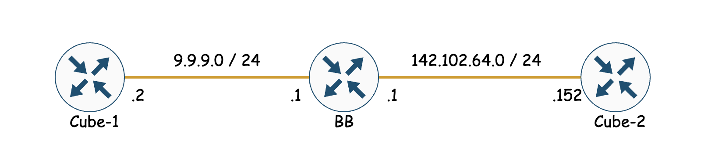

LABS 01
NET-LAB-01 : Register endpoint to CUCM with using SSCP and SIP respectively and capture from user site.
QoS-LAB-01 : Capture file from BB router and analyse COS and DSCP fields in header.
QoS-LAB-02 : Write a policy on BB router with two way (Header and Payload inspection ) respectivly for matching telnet traffic and try telnet from Cube-1 to BB router. Copy running config for each scenario.
